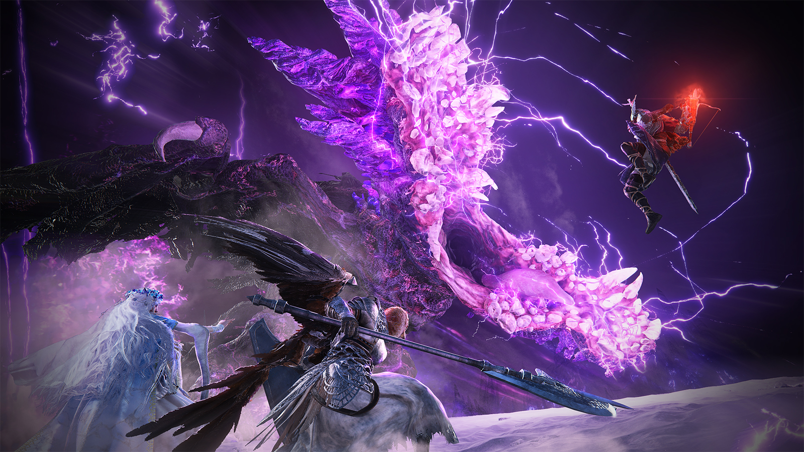
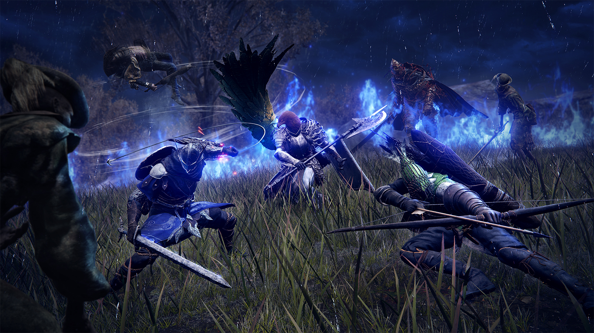
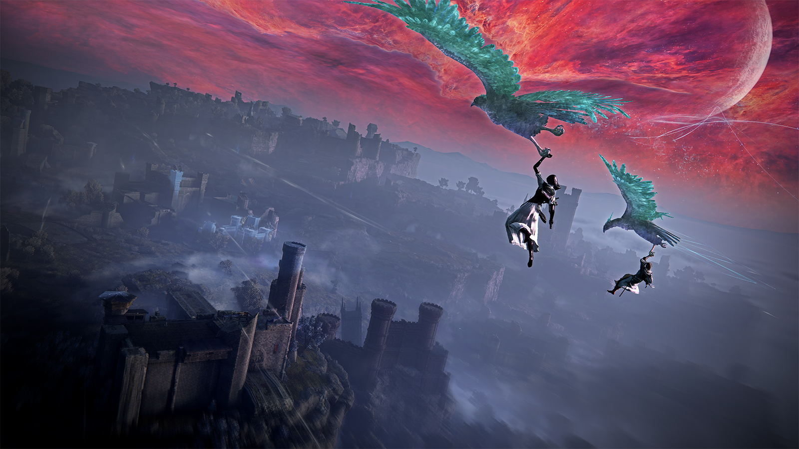
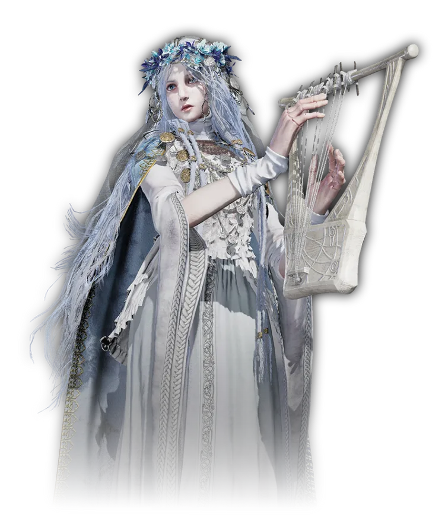
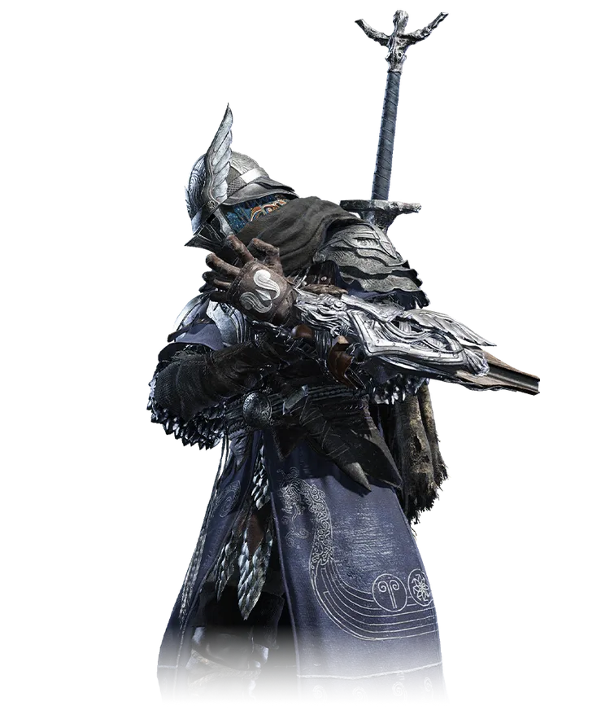
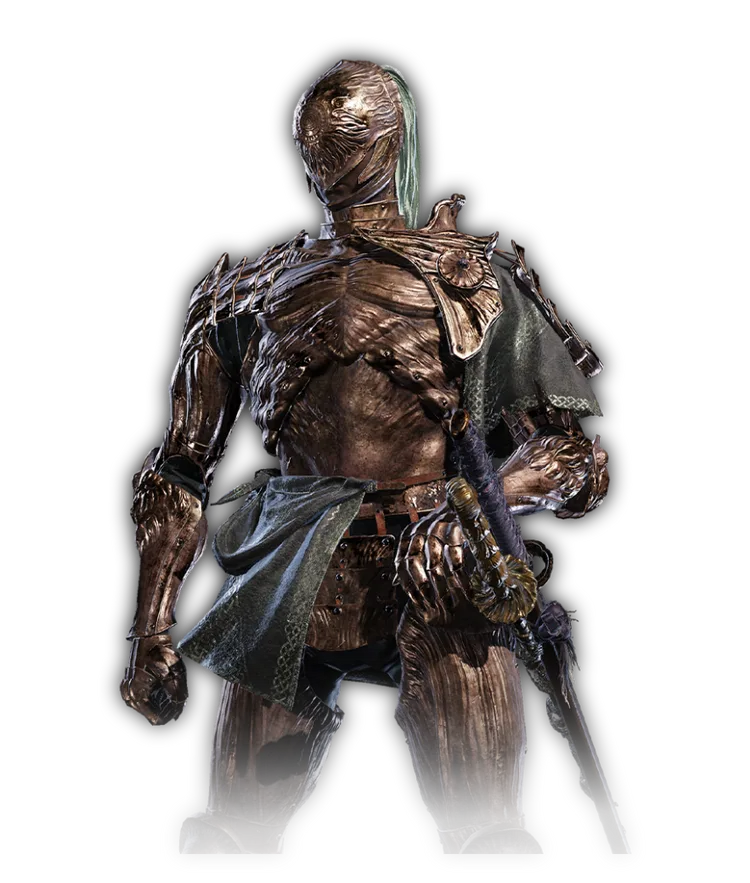
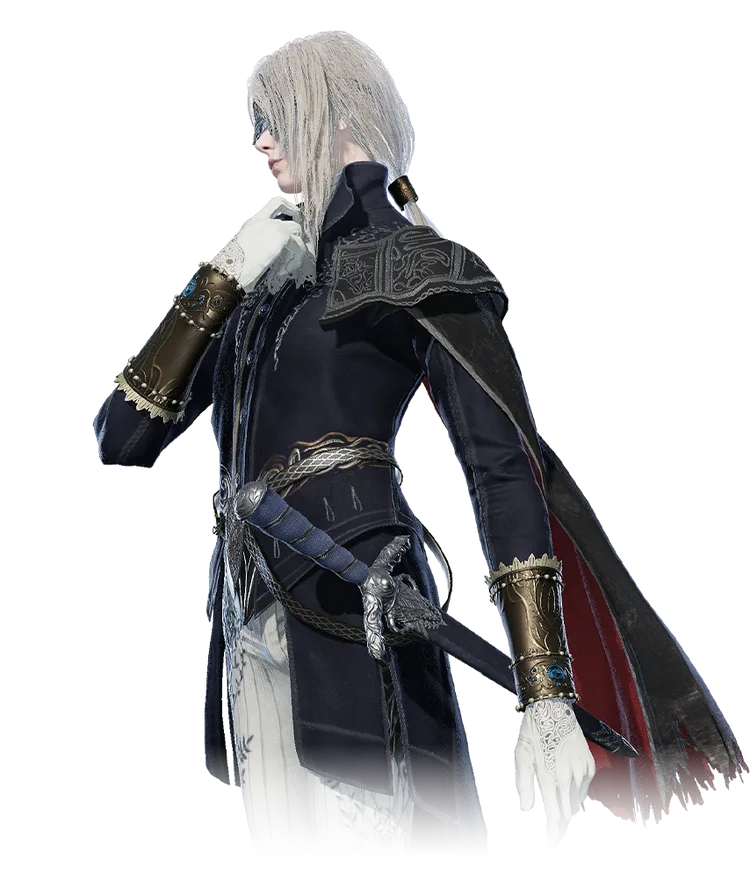

Core Mechanics
3-Player Co-op
Form a party of three Tarnished. Choose complementary roles to survive the night. Cooperation is key to overcoming overwhelming odds.

Time Limit Survival
Night is short. You must complete your objective and defeat the boss before dawn breaks. Manage your time and resources wisely.

Dynamic Map
The landscape of Limveld changes every run. Paths, enemies, and events are randomized, ensuring no two nights are the same.

Select Your Hero
Each character possesses unique abilities and playstyles. Master their skills to dominate the night.

Revenant
Summoner / Lyre
A possessed doll who uses a lyre to summon spirits to fight in her stead.

Wylder
Greatsword / All-Rounder
The protagonist. A balanced Nightfarer wielding a greatsword, ready for any situation.

Executor
Katana / Duelist
A former Crucible Knight who specializes in the katana. High skill, high damage.

Duchess
Dagger / Rogue
The true form of the Priestess. Wields daggers and a magic pocketwatch for high mobility.